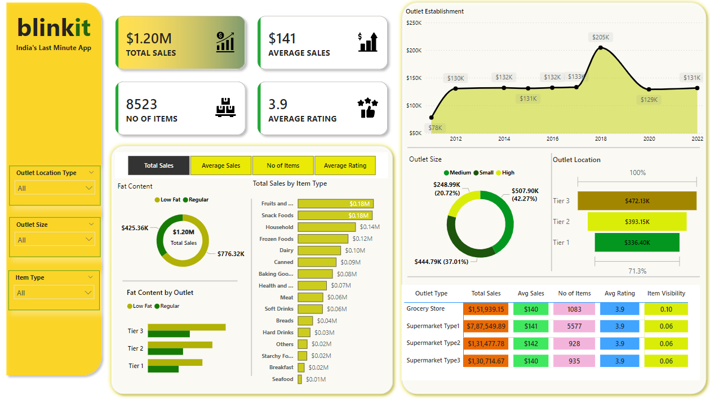
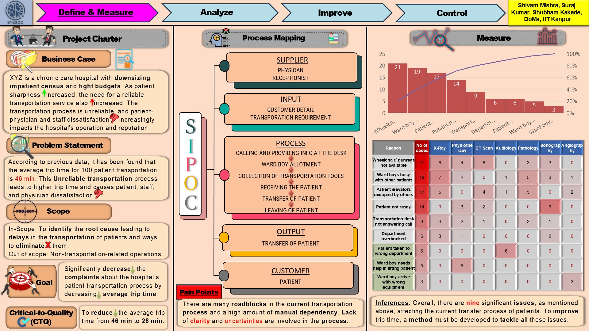
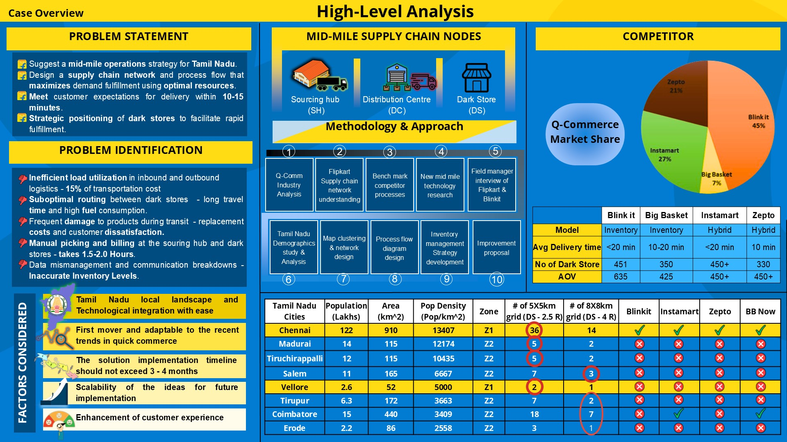
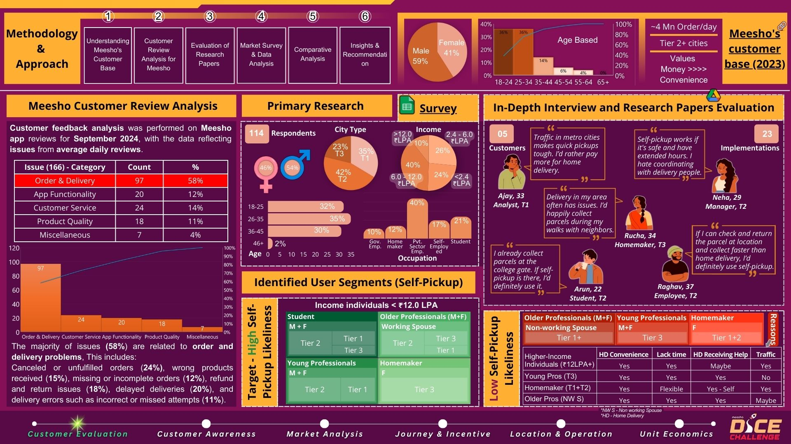

A Power BI dashboard analyzing Blinkit's grocery data.
Key insights: Low Fat products lead sales (64.6%), Tier 3 supermarkets drive the highest revenue, and customer satisfaction remains steady with a 3.9 rating.
Great for understanding grocery retail trends and consumer behavior.


COVID-19 data exploration using techniques like joins, CTEs, temp tables, window functions, and aggregates in SQL Server. It compares cases, deaths, vaccinations, and population impacts to provide insights globally and for specific countries.
Automates data extraction from Ajio's Men's Grooming section using Python and Selenium. Handles infinite scrolling, scrapes product details (brand, name, rating, price), and saves them into a structured CSV format for analysis.

Scrape data of mobile phones under 50,000 INR from Flipkart using Python BeautifulSoup.
SQL script cleans and transform the Nashville Housing dataset by standardizing formats, handling missing values, splitting data, and removing duplicates to prepare it for analysis.

Inefficiencies in patient transport at a hospital led to delays and dissatisfaction. Using Lean Six Sigma, the plan aims to digitalize and cut trip times from 46 to 28 minutes, boosting efficiency by 42%.

Optimized mid-mile strategy for Tamil Nadu’s quick commerce enables 10-15 minute deliveries by leveraging Flipkart’s logistics, strategic dark store placements in high-demand areas, and a phased city rollout. AI-driven route optimization cut logistics costs by 15-30% and boosted order accuracy by up to 50%.

Assessed feasibility of a self-pickup model for Meesho, analyzing user segments and delivery patterns in Tier 2/3 cities; developed incentives and PUDO partnerships projected to save ₹14 /order and boost quarterly profits by ₹1.69M /city.